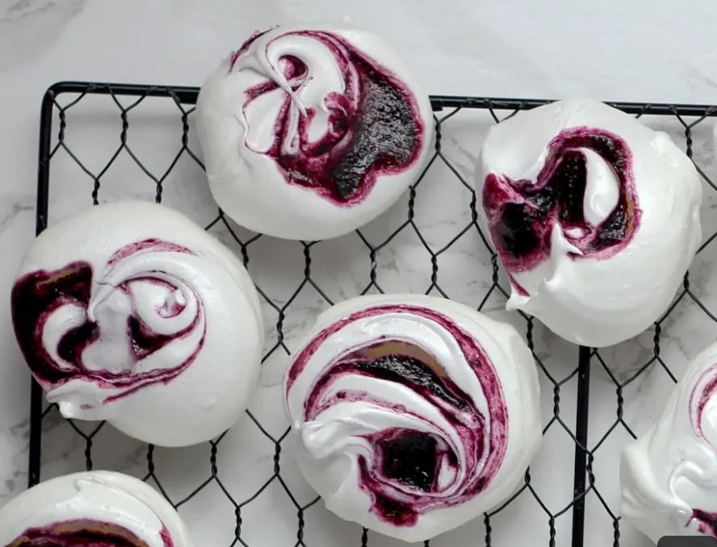

Fruit Swirled Meringue Cookies
These fruit swirled meringue cookies are pretty, easy and delicious!

Fruit Swirled Meringue Cookies
Ingredients
- 1/2 cup blueberries, raspberries or chopped strawberries (fresh or frozen)
- 1 tablespoon + 1 cup sugar, divided
- 4 large egg whites, at room temperature
- 1/2 teaspoon cream of tartar
Baking Instructions
- Make the Fruit Swirl: Bring the fruit and 1 tablespoon of sugar to a boil in a small saucepan and simmer for 5 - 10 minutes, strain (discard the solids) and cool completely.
- Prep the Oven & Pans: Pre-heat the oven to 200 degrees and line 2 baking sheets with Silpats or greased parchment paper (yes, you need to grease the parchment—the fruit will make the cookies stick to the paper, making them almost impossible to remove cleanly).
- Whip the Meringue: Using the whisk attachment, beat the egg whites on low speed till frothy, and the surface is completely covered in tiny bubbles (don't rush this step). Add the cream of tartar and increase the speed to medium. When tracks begin to form add the remaining 1 cup of sugar, a little at a time, then increase the speed to high. Beat till mixture is stiff and glossy.
- Swirl & Bake: Using a spoon, dollop mounds of meringue onto your prepared baking sheets. Spoon a bit (about 1/2 teaspoon) of puree on top of each and gently swirl with a toothpick. Bake for 2 hours, rotating the pans from top to bottom halfway through. Turn off the oven and leave the door ajar for one hour. Transfer cookies to a wire rack to cool completely.
- Storage: Store in an airtight container till ready to use.